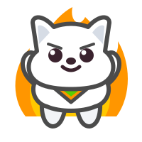
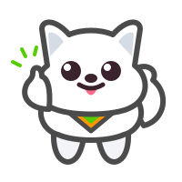

TOEIC Practice
TOEIC
ホーム
演習
復習
設定
英→日
単語ドリル

0
💎
0
絞り込み
0
単語ドリル
文法ドリル (Part 5)

正解！お見事！
素晴らしい調子です！
← 前へ
わからない
次へ
設定
🎯
範囲を絞って集中しませんか？
✕
現在の出題数は
300問以上
あります。
一度にすべて解き続けるより、
100問ほどに絞って繰り返し周回する
のが
定着への一番のおすすめです！
「日々の単語」や「苦手＋未出題」などに
絞り込んでみませんか？
🎯 絞り込みを設定する
このまま解く
絞り込み・出題設定
✕
学習対象
単語ドリル
文法ドリル (Part 5)
参考書・範囲
すべて
日々の単語
TEPPAN
すべて
名詞
動詞
形容詞
副詞
句・表現
参考書・章
すべて
(983)
👑 金の文法
(160)
📖 世界一
(141)
🧭 ポラリス2
(334)
🎓 トップレベル
(348)
出題モード
英→日
日→英
カード
タイプ
出題する問題
すべて
苦手+未
苦手のみ
0
要復習
0
出題する問題
すべて
苦手+未
苦手のみ
0
要復習
0
条件に合う問題がありません。条件をゆるめてください。
この条件で解く
✕
苦手リスト